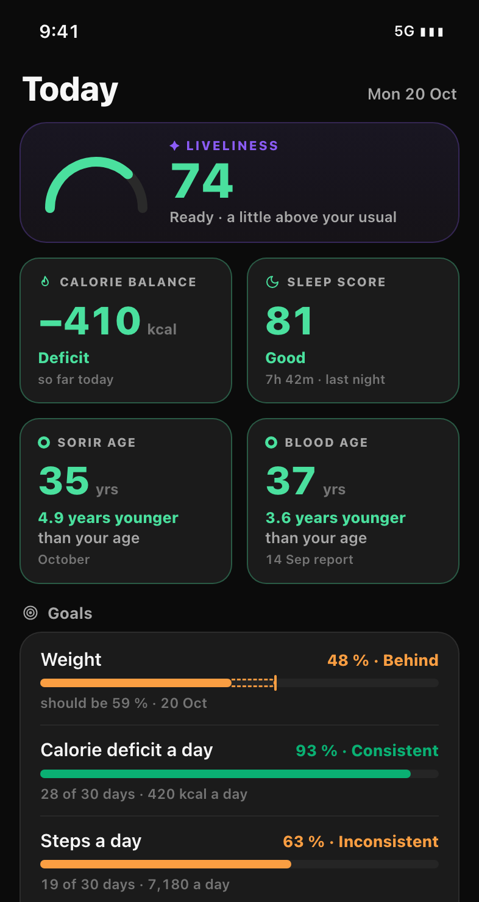
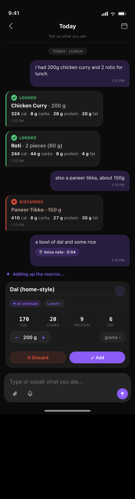
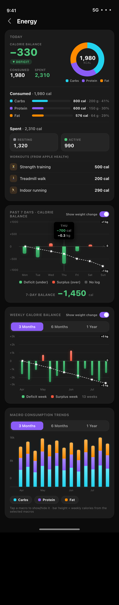
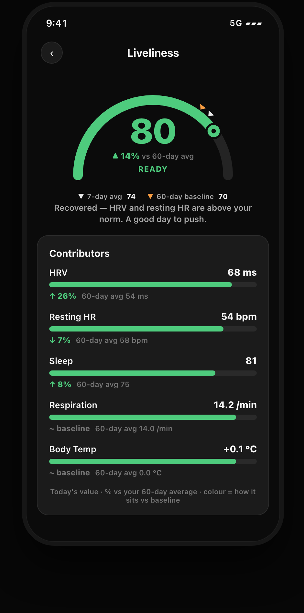
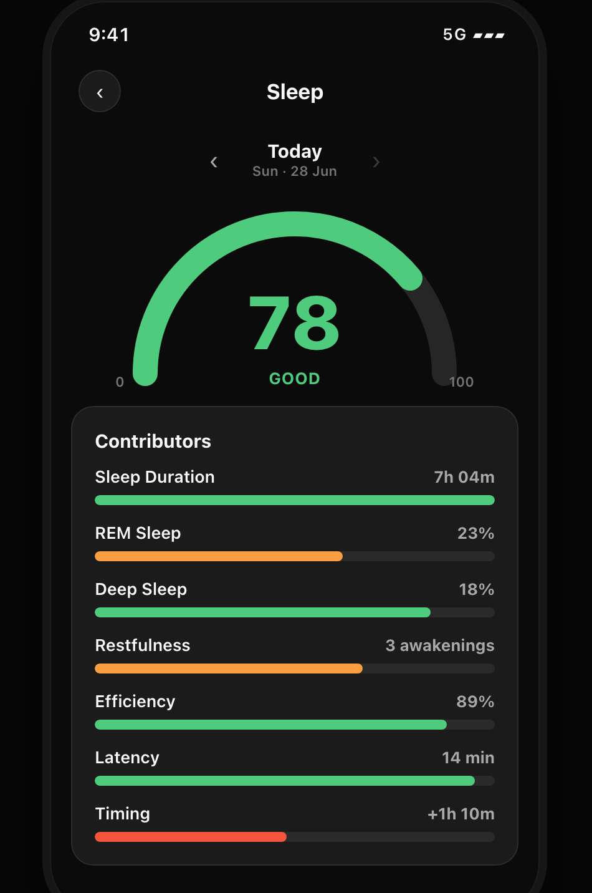

Your whole health, in one place that remembers you.
Food, sleep, recovery, lab reports and goals, finally in one iPhone app. Sorir knows your history, shows you what is changing and tells you what to do next.

A serious health routine today is a stack of apps that don't remember you and don't talk to each other. Sorir replaces the stack with one system.
Every chatbot conversation starts from zero, so you explain your history again and again.
Work out a meal in one app, then enter it in another. Two tools, one meal, every time.
Sleep, recovery, food and blood work sit in separate places, and the joining up is left to you.
Sorir turns everything you track into answers about you, and a clear next step.
Get answers from your own data, not generic advice, with sources you can tap and check.
Tell Sorir you started a supplement or hurt your knee. It remembers, and it keeps up when things change.
When a report moves, a goal slips or a pattern appears, Sorir tells you first, without nagging.
Sorir Age shows how fit you are for your age. Blood Age shows what your blood work says. Both show what would move them.
Set a goal on weight, steps, sleep, protein or a lab value, and see every day whether you are on pace.
Upload PDFs or photos. Every value becomes a trend you can follow, shown against a healthy range.
Type it, say it or take a photo. Sorir understands how people really eat, including Indian dishes and everyday household measures.

Calories in, calories out, macros and workouts in one view, with trends across weeks and months.

Liveliness is your daily readiness score, measured against your own normal rather than a population average.

A nightly sleep score that shows what went well, what didn't, and how your sleep is trending.

Every answer starts from your own numbers and your own history.
Scores and healthy ranges draw on published research, explained in plain language.
A native app, designed for iOS 26 and built to work with Apple Health.
One person building a real product end to end, from the iPhone app to the backend, with a team of AI coding agents. Everything Sorir remembers about you runs on a layered memory architecture.